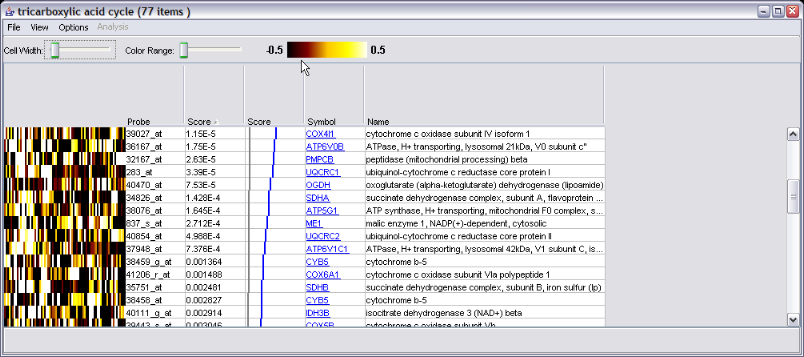

Exploring gene set details
From the Output Panel (table or tree), you can double-click on a gene
set row to pop up a new window showing the details for the gene set. If
you have done multiple analyses, click on the p-value for the specific
gene set you wish to view. If you have not done any analysis, you will
still see the window. After double-clicking, you will see a new window.
A typical window will look like this

There are a few things to note:
- If you have done an analysis, then the relevant gene score file
will be defined, and the probe scores for the probes in the gene set
will be displayed. If you have no current analyses, then the last gene
score file you used will be selected for showing probe scores.
- If you have loaded your raw expression data, the window will
include a visualization of the data. If you have not, or there is
missing data, you will see a partly or completely grey square at the
left. If you want to see raw data, you can set
the data set.
- You can open as many visualization windows as you like, including
multiple windows for the same gene set.
The non-data columns are as follows:
-
Probe - the identifier supplied by the array manufacturer, read in
from the
annotation file. In
this example, this is an Affymetrix array.
-
Score - the user-supplied gene score (if you have supplied one).
This value is loaded from the
"gene
scores" file. Probes which were present in the array design, but
not used for analysis due to lack of a gene score, are shown with a
score of "NaN" (not a number).
-
Score (visual) - a graph showing the scores graphically. The blue
line represents the scores. The grey line shows the expected
distribution under the null hypothesis and assuming
independence (this only works if the values are p values).
-
Symbol - the official gene symbol as supplied in the annotation
file, with hyperlinks to a web site of your choosing. You can
change the target URL as described
here
.
-
Name - the gene name as supplied in the annotation file.
Image controls
-
Sorting: Clicking on any column (including the
raw data column) headers result in sorting of the view.
-
Contrast: You can adjust the color range
(contrast) and cell width for the color map.

-
Resize the columns in the image view. Use this to "zoom out" to
make the image fit horizontally on your screen.
-
Using the "View" menu, you can switch between different preset
color maps and choose normalize or non-normalized data for viewing.


Changing the hyperlinks
When you click on a gene symbol, your web browser will be opened to a
web site of your choosing. The preset is the NCBI "Gene" database, but
you can change this using the "Options->Change gene name URL" menu item:

Using this requires that you know the URL (web address) for a gene.
Just replace the term you would normally put in the URL with two "at"
symbols ("@@"). They will be replaced with the Gene Symbol.
For details and some examples, see this
page.
Changing the data set
You can switch data sets (or define one if you have never loaded one)
viewed in the heatmap by selecting the "Options->Change data set".
Here's an example where we switched:

Note: Naturally, if you switch to a data set that
uses a different microarray design, the results might not make much
sense. Note that the gene scores displayed are always the ones you used
for the last analysis (or the run you double-clicked on) to get this
window)
Note: If you switch data sets, the setting is
"sticky": all new visualization windows you open will use this data set,
until you switch back.
Saving the data and/or image
Using the "File" menu, you can save the data shown, in text or image
formats:

Here is an example of the resulting image, which is in PNG format:

You can also save the data using the "File...Save data..." menu
option:

A sample resulting file for the data above is here. In this case we had the
"include annotations" but not "normalize" checked. This file can be
loaded into Excel or a simliar program for further analysis.